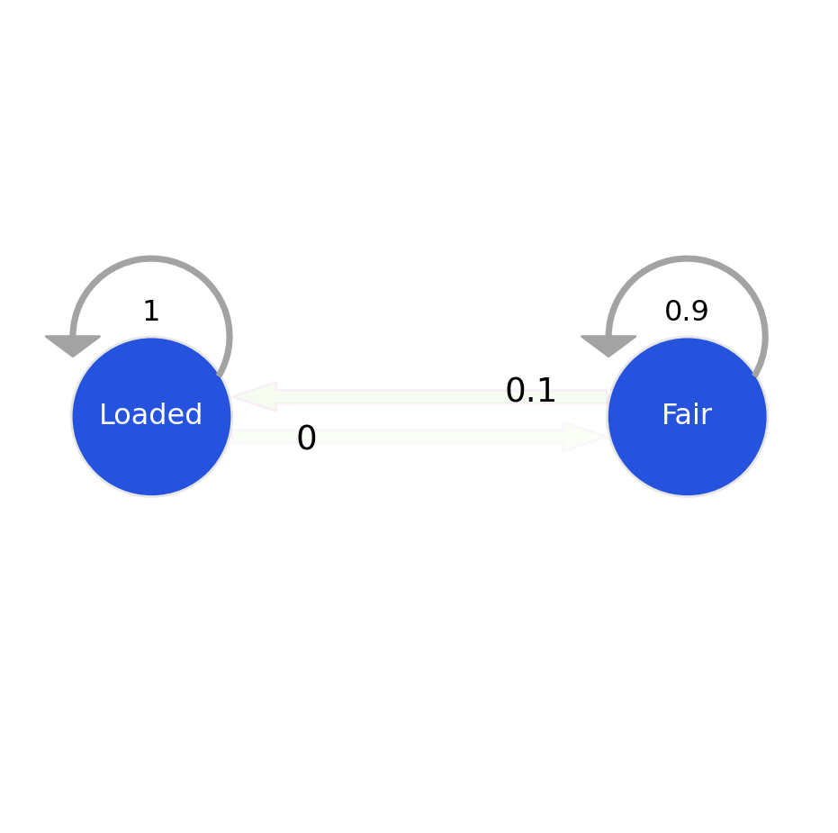
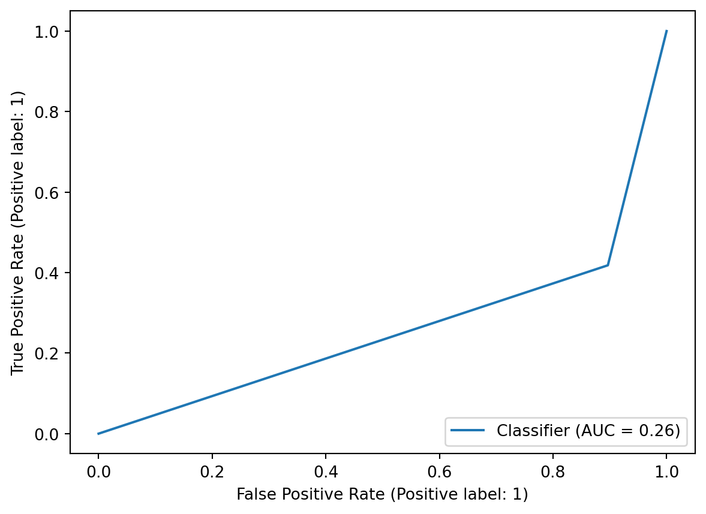

Code
import numpy as np
import pandas as pd
import matplotlib.pyplot as plt
%matplotlib inlineHidden Markov Models (HMMs) are a powerful statistical tool used in various fields, including speech recognition, bioinformatics, and natural language processing. Grounded in probability theory, HMMs are a type of stochastic model that represents a system evolving over time with hidden states. The model assumes that the observed data result from a probabilistic process involving these hidden states, making it particularly effective in situations where the underlying dynamics are not directly observable but can be inferred through observed data and the probabilities governing state transitions and emissions. Probability theory forms the backbone of HMMs, allowing them to make predictions and decisions based on the likelihood of sequences of observations given the model’s parameters.
import numpy as np
import pandas as pd
import matplotlib.pyplot as plt
%matplotlib inlineThe [hmmlearn] library in Python performs Unsupervised learning and inference of Hidden Markov Models.
Let us take the common Hidden Markov Model example of the ocassionally dishonest casino. In a casino, they use a fair die most of the time, but switch to the loaded die once in a while. The purpose of making use of the Hidden Markov Model is to identify instances when the dice roll is probabilistically from the fair die or the loaded die.
The probabilities for the various outcome variables have been adapted from this textbook.

The emission probabilities are the probability of each outcome (die roll) at its current state. The transition probabilities define the probability of transitioning to a state (fair, loaded), and the start probabilities define the starting probability of being in each state.
From the hmmlearn library, the CategoricalHMM model (derived from the MultinomialHMM model), uses the Baum-Welch algorithm for training hidden Markov models (HMMs). The Baum-Welch algorithm, also known as the Forward-Backward algorithm or the Expectation-Maximization (EM) algorithm for HMMs, is an iterative procedure for estimating the parameters of an HMM given a set of observed data.
You can read more on the training of the Hidden Markov Model and the probability theory behind identifying the sequence state part at the end of this blog.
In the block of code below, we initialize the probabilities, initialize the CategoricalHMM method which takes in n_components as the number of possible states, the number of iterations for training. The other parameters (such as init_param, algorithm, etc.) details can be found here.
We then use the sample() method to generate die roll and corresponding state samples.
from hmmlearn import hmm
gen_model = hmm.CategoricalHMM(n_components=2, n_iter=100)
gen_model.startprob_ = np.array([1.0, 0.0])
gen_model.transmat_ = np.array([[0.95, 0.05],
[0.1, 0.9]])
gen_model.emissionprob_ = \
np.array([[1 / 6, 1 / 6, 1 / 6, 1 / 6, 1 / 6, 1 / 6],
[1 / 10, 1 / 10, 1 / 10, 1 / 10, 1 / 10, 1 / 2]])
rolls, gen_states = gen_model.sample(30000)Transition Model:
Emission Matrix:
| Fair | Unfair | |
|---|---|---|
| 1 | 0.166667 | 0.1 |
| 2 | 0.166667 | 0.1 |
| 3 | 0.166667 | 0.1 |
| 4 | 0.166667 | 0.1 |
| 5 | 0.166667 | 0.1 |
Sample of Dice Rolls generated| Roll | Coin_State | |
|---|---|---|
| 0 | 4 | 0 |
| 1 | 5 | 0 |
| 2 | 1 | 0 |
| 3 | 3 | 0 |
| 4 | 2 | 0 |
Plotting the states of the first 500 generated coin flips:
fig, ax = plt.subplots()
ax.plot(gen_states[:500])
ax.set_title('States over time')
ax.set_xlabel('Time (# of rolls)')
ax.set_ylabel('State')
fig.show()C:\Users\Anu2001\AppData\Local\Temp\ipykernel_2396\1192688859.py:6: UserWarning: Matplotlib is currently using module://matplotlib_inline.backend_inline, which is a non-GUI backend, so cannot show the figure.
fig.show()
Plotting the rolls for the fair and loaded states
fig, ax = plt.subplots()
ax.hist(rolls[gen_states == 0], label='fair', alpha=0.5,
bins=np.arange(7) - 0.5, density=True)
ax.hist(rolls[gen_states == 1], label='loaded', alpha=0.5,
bins=np.arange(7) - 0.5, density=True)
ax.set_title('Roll probabilities by state')
ax.set_xlabel('Count')
ax.set_ylabel('Roll')
ax.legend()
fig.show()C:\Users\Anu2001\AppData\Local\Temp\ipykernel_2396\1259329272.py:10: UserWarning: Matplotlib is currently using module://matplotlib_inline.backend_inline, which is a non-GUI backend, so cannot show the figure.
fig.show()
In the code below, we are performing a 50%-50% train-test dataset split. We are then fitting the model on our train set and obtaining the score for the model which is simply the log probability under the model. Then, we make use of the predict method which implements the Viterbi algorithm to predict the best sequence of states for the given observations (dice rolls).
# split our data into training and validation sets (50/50 split)
X_train = rolls[:rolls.shape[0] // 2]
X_test = rolls[rolls.shape[0] // 2:]
y_test = np.array(gen_states[gen_states.shape[0] // 2:])
gen_model = gen_model.fit(X_train)
# check base score (non-tuned model)
gen_score = gen_model.score(X_test)
print(f'Generated score: {gen_score}')
# use the Viterbi algorithm to predict the most likely sequence of states
# given the model
states = gen_model.predict(X_test)Even though the 'startprob_' attribute is set, it will be overwritten during initialization because 'init_params' contains 's'
Even though the 'transmat_' attribute is set, it will be overwritten during initialization because 'init_params' contains 't'
Even though the 'emissionprob_' attribute is set, it will be overwritten during initialization because 'init_params' contains 'e'Generated score: -26290.379422637572Recovered states vs Generated states:
fig, ax = plt.subplots()
ax.plot(gen_states[:500], label='generated')
ax.plot(states[:500] + 1.5, label='recovered')
ax.set_yticks([])
ax.set_title('States compared to generated')
ax.set_xlabel('Time (# rolls)')
ax.set_xlabel('State')
ax.legend()
fig.show()C:\Users\Anu2001\AppData\Local\Temp\ipykernel_2396\4070381187.py:9: UserWarning: Matplotlib is currently using module://matplotlib_inline.backend_inline, which is a non-GUI backend, so cannot show the figure.
fig.show()
Updated Markov Model probabilities after training the HMM on the dataset with the Baum-Welch algorithm.
Transition Model:
Emission Matrix:
| Fair | Unfair | |
|---|---|---|
| 1 | 0.150 | 0.001 |
| 2 | 0.143 | 0.001 |
| 3 | 0.145 | 0.000 |
| 4 | 0.140 | 0.988 |
| 5 | 0.144 | 0.008 |
Results of the model in the form of a confusion matrix to identify how many times the model predicted ‘Fair’ and ‘Loaded’ coin correctly given the dice roll.
As we can see from the results below, the accuracy of the model is not considered to be extremely good. This is because we are dealing with a truly probabilistic model, the results are based on the ‘likelihood’ parameter. Also, the model has been trained on sample data which may not mimic true data to the fullest.
from sklearn.metrics import confusion_matrix, classification_report, ConfusionMatrixDisplay
from sklearn.metrics import RocCurveDisplay
# True states (hidden states)
true_states = y_test
predicted_states = states
# Evaluate confusion matrix
conf_matrix = confusion_matrix(true_states, predicted_states)
# Display confusion matrix
print("Confusion Matrix:")
disp = ConfusionMatrixDisplay(confusion_matrix=conf_matrix, display_labels=['Fair', 'Loaded'])
disp.plot()
plt.show()
# Evaluate classification report
class_report = classification_report(true_states, predicted_states)
# Display classification report
print("Classification Report:")
print(class_report)
RocCurveDisplay.from_predictions(true_states, predicted_states)Confusion Matrix:
Classification Report:
precision recall f1-score support
0 0.67 1.00 0.81 10119
1 0.00 0.00 0.00 4881
accuracy 0.67 15000
macro avg 0.34 0.50 0.40 15000
weighted avg 0.46 0.67 0.54 15000

<sklearn.metrics._plot.roc_curve.RocCurveDisplay at 0x20f881d1360>
def convert_to_numpy(string_val, type):
str_int = []
if type == "rolls":
for i in string_val:
str_int.append(np.array([int(i)-1]))
else:
dice = {'F':0, 'L':1}
for i in string_val:
str_int.append(np.array(dice[i]))
return str_int
def convert_to_string(string_die):
dice = {0: 'F', 1:'L'}
string = ""
for i in string_die:
string+=dice[i]
return stringTesting the model on an example taken from the textbook:  {width = 60%}
{width = 60%}
test_rolls1 = "315116246446644245311321631164152133625144543631656626566666"
y_true1 = "FFFFFFFFFFFFFFFFFFFFFFFFFFFFFFFFFFFFFFFFFFFFFFFFLLLLLLLLLLLL"
test_rolls2 = "222555441666566563564324364131513465146353411126414626253356"
y_true2 = "FFFFFFFFLLLLLLLLLLLLLFFFFFFFFFFFFFFFFFFFFFFFFFFFFFFFFFFFFFFL"
X_test_1 = convert_to_numpy(test_rolls1, "rolls")
y_test_1 = gen_model.predict(X_test_1)
b = convert_to_string(y_test_1)
print(f"Output:{test_rolls1} \nDie:{y_true1} \nViterbi:{b}")
X_test_2 = convert_to_numpy(test_rolls2, "rolls")
y_test_2 = gen_model.predict(X_test_2)
b = convert_to_string(y_test_2)
print(f"Output:{test_rolls2} \nDie:{y_true2} \nViterbi:{b}")Output:315116246446644245311321631164152133625144543631656626566666
Die:FFFFFFFFFFFFFFFFFFFFFFFFFFFFFFFFFFFFFFFFFFFFFFFFLLLLLLLLLLLL
Viterbi:LFFFFFFFFFFFFFFFFFFFFFFFFFFFFFFFFFFFFFFFFFFFFFFFFFFFFFFFFFFF
Output:222555441666566563564324364131513465146353411126414626253356
Die:FFFFFFFFLLLLLLLLLLLLLFFFFFFFFFFFFFFFFFFFFFFFFFFFFFFFFFFFFFFL
Viterbi:LFFFFFFFFFFFFFFFFFFFFFFFFFFFFFFFFFFFFFFFFFFFFFFFFFFFFFFFFFFFDetailing the probability theory behind the Hidden Markov Model The Baum-Welch algorithm, also known as the Forward-Backward algorithm, is a parameter estimation technique for Hidden Markov Models (HMMs). Named after Leonard Baum and Lloyd Welch, this algorithm is a form of the Expectation-Maximization (EM) algorithm. Its primary goal is to iteratively refine the parameters of an HMM based on observed data, making it a powerful tool for model training.
The algorithm consists of two main steps, the expectation step and the maximization step.
The parameters of a HMM are given by \(\theta=(A,B,\pi)\), where:
\[\(A=\{a_{ij}\}=P(X_{t}=j|X_{t-1}=i)\) is the state transition matrix\]
\[\(\pi=\{\pi_{i}\}=P(X_{1}=i)\) is the initial state distribution\]
\[\(B=\{b_{j}(y_{t})\}=P(Y_{t}=y_{t}|X_{t}=j)\) is the emission matrix\]
Given observation sequences \[(Y=(Y_{1}=y_{1},Y_{2}=y_{2},...,Y_{T}=y_{T}))\] the algorithm tries to find the parameters \[(\theta)\] that maximise the probability of the observation.
The algorithm starts by choosing some initial values for the HMM parameters \(\theta = (A, B, \pi)\). Then, it repeats the following steps until convergence:
The forward-backward algorithm is used for finding probable paths.
$$ Forward Procedure ({i}(t)=P(Y{1}=y_{1},…,Y_{t}=y_{t},X_{t}=i|)) be the probability of seeing (y_{1},…,y_{t}) and being in state i at time t. Found recursively using: \ ({i}(1)={i}b_{i}(y_{1})) \ ({j}(t+1)=b{j}(y_{t+1}){i=1}^{N}{i}(t)a_{ij}) \
Backward Procedure ({i}(t)=P(Y{t+1}=y_{t+1},…,Y_{T}=y_{T}|X_{t}=i,)) be the probability of ending partial sequence (y_{t+1},…,y_{T}) given starting state i at time t. \ ({i}(t)) is computed recursively as: \ ({i}(T)=1)\ ({i}(t)={j=1}^{N}{j}(t+1)a{ij}b_{j}(y_{t+1})) $$
def forward(states, sequence, a, b, pi, key):
N = len(states)
T = len(sequence)
pi = pi[key] # prob of state i, since 2 states, let's half it be 0.5, 0.5 initially
i = key # holds the first state
# Pseudocount to handle zeros
pseudocount = 1e-100
# for all possible states, and the first actual state (alpha)
# i.e. alpha i for all i has been caluclated given yt
alpha = np.zeros((N, T))
alpha[:,0] = pi * b[:,int(sequence[0])] + pseudocount
# next, we have to do iterations to calculate alpha at different times t
# we need all alpha values since it is going to be summed up to calculate gamma
for t in range(1, T):
for j in range(N):
alpha[j][t] = sum(alpha[i][t-1]*a[i][j]*b[j][int(sequence[t])] for i in range(N)) + pseudocount
return alphadef backward(states, sequence, a, b):
N = len(states)
T = len(sequence)
beta = np.zeros((N, T))
# Pseudocount to handle zeros
pseudocount = 1e-100
# Initialization
beta[:, -1] = 1 # Set the last column to 1
# Recursion
for t in range(T - 2, -1, -1):
for i in range(N):
beta[i, t] = sum(a[i, j] * b[j, int(sequence[t + 1])] * beta[j, t + 1] for j in range(N)) + pseudocount
return betaThe Expectation step: Calculate the probabilities of being in each state at each time step given the observed sequence using the Forward-Backward algorithm. These probabilities represent the likelihood of the system being in state \(i\) at time \[t\] given the entire observed sequence. Calculate the joint probabilities of transitioning from state \[i\] to state \[j\] at consecutive time steps given the observed sequence.
\[ \gamma_t(i) = \frac{\alpha_t(i) \cdot \beta_t(i)}{\sum_{j=1}^{N} \alpha_t(j) \cdot \beta_t(j)} \\ \xi_t(i, j) = \frac{\alpha_t(i) \cdot a_{ij} \cdot b_j(o_{t+1}) \cdot \beta_{t+1}(j)}{\sum_{k=1}^{N} \sum_{l=1}^{N} \alpha_t(k) \cdot a_{kl} \cdot b_l(o_{t+1}) \cdot \beta_{t+1}(l)} \]
The Maximization step: Update the model parameters, including the initial state probabilities, transition probabilities, and emission probabilities. The updated parameters are computed by normalizing the expected counts derived from the E-step.
$$
_i = _1(i) //
_{ij} = //
_i(k) = // $$
def train(a, b, pi, sequence, states, key, n_iterations = 100, tol=1e-6):
#Baum-Welch algorithm for HMM
# calculate gamma, xi, and then update a and b parameters
N = len(states)
T = len(sequence)
# M is the number of possible observations i.e. number of columns
M = b.shape[1]
prev_log_likelihood = 0
for iteration in range(n_iterations):
alpha = forward(states, sequence, a, b, pi, key)
beta = backward(states, sequence, a, b)
print(f"Alpha: {alpha}")
print(f"Beta:{beta}")
# Pseudocount to handle zeros
pseudocount = 1e-100
gamma = alpha * beta
# print(gamma)
denominator = np.sum(gamma, axis=0, keepdims=True) # same for all i
gamma = gamma/denominator + pseudocount
print(f"gamma:{gamma}")
xi = np.zeros((N, N, T - 1))
for i in range(N):
for j in range(N):
for t in range(T - 1):
numerator = alpha[i, t] * a[i, j] * b[j, int(sequence[t + 1])] * beta[j, t + 1]
denominator = np.sum(alpha[k, t] * a[k, l] * b[l, int(sequence[t + 1])] * beta[l, t + 1] for k in range(N) for l in range(N))
xi[i, j, t] = (numerator / denominator) + pseudocount
print(f"Xi: {xi}")
# update a and b
# M-step
'''
sequence == k creates a boolean array of the same length as sequence, where each element is True if the corresponding element in sequence is equal to k, and False otherwise.
mask = (sequence == k) assigns this boolean array to the variable mask.
In the context of the Baum-Welch algorithm or similar algorithms for Hidden Markov Models (HMMs), this kind of mask is often used to select specific observations in the computation of probabilities. For example,
it might be used to sum over only the observations that match a particular value, which is relevant when updating the emission matrix b.
'''
# a = (np.sum(xi, axis=2) + pseudocount)/ np.sum(gamma[:, :-1], axis=1, keepdims=True)
for i in range(N): # N is the number of states
for j in range(N): # N is the number of states
numerator = np.sum(xi[i, j, :])
denominator = np.sum(gamma[i, :])
a[i, j] = (numerator+pseudocount) / (denominator+pseudocount)
b = np.zeros((N, M))
# print(gamma.shape)
gamma_sum = np.sum(gamma, axis=1)
obs = []
for i in sequence:
obs.append(int(i))
obs = np.array(obs)
for j in range(N):
for k in range(M):
mask = (obs==k) # for indicative function i.e. 1 if observed = yt, else 0
b[j, k] = (np.sum(gamma[j]*mask)+ pseudocount) / (np.sum(gamma[j]) + pseudocount)
# Normalize rows to ensure each row sums to 1.0
a = a / np.sum(a, axis=1)[:, np.newaxis]
b = b / np.sum(b, axis=1)[:, np.newaxis]
print(f"a = {a}, b = {b}")
# Log Likelihood Calculation
log_likelihood = np.sum(np.log(np.sum(alpha, axis=0)))
# Convergence Check
if np.abs(log_likelihood - prev_log_likelihood) < tol:
print(f"Converged after {iteration + 1} iterations.")
break
prev_log_likelihood = log_likelihood
return a, b, piThe Viterbi algorithm is a dynamic programming algorithm used for decoding Hidden Markov Models (HMMs) and finding the most likely sequence of hidden states given an observed sequence. The algorithm efficiently determines the optimal state sequence by considering the probabilities of transitions and emissions.
The core idea behind the Viterbi algorithm is to iteratively compute the most likely path to each state at each time step, incorporating both the current observation and the previously calculated probabilities.
\[ δ_i(t) = max_j δ_j(t - 1) a_ji b_i(Y_t) \]
\[ ψ_i(t) = argmax_j δ_j(t - 1) a_ji \]
def predict(sequence, states, a, b, pi):
# Makes use of the viterbi algorithm to predict best path
# Initialize Variables
T = len(sequence)
N = len(states)
# Pseudocount to handle zeros
pseudocount = 1e-100
viterbi_table = np.zeros((N, T)) # delta
backpointer = np.zeros((N, T)) # psi
# Initialization step, for t = 0
print(int(sequence[0]))
viterbi_table[:, 0] = pi * b[:, int(sequence[0])] + pseudocount
# Calculate Probabilities
for t in range(1, T):
for s in range(N):
max_prob = max(viterbi_table[prev_s][t-1] * a[prev_s][s] for prev_s in range(N)) * b[s][int(sequence[t])]
viterbi_table[s][t] = max_prob + pseudocount
backpointer[s][t] = np.argmax([viterbi_table[prev_s][t-1] * a[prev_s][s]for prev_s in range(N)])
#Traceback and Find Best Path
best_path = []
last_state = np.argmax(viterbi_table[:, -1])
best_path.append(last_state)
best_prob = 1.0
for t in range(T-2, -1, -1):
last_state = last_state = np.argmax(viterbi_table[:, t])
best_prob *= (viterbi_table[last_state, t] + pseudocount)
best_path.append(last_state) # i.e. add to start of list
return best_path